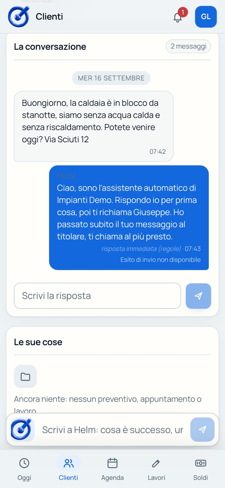

Automazioni WhatsApp che rispondono mentre lavori.
Il cliente scrive, e qualcuno gli risponde subito: con i tuoi orari, i tuoi listini e la tua agenda. Fissa l'appuntamento, manda il promemoria, segue il preventivo. Tu leggi tutto quando hai le mani libere.
Rispondo io, entro un giorno lavorativo.

Helm su WhatsApp · dati di prova
Il cliente scrive quando lavori.
Non la sera. Di giorno, mentre hai le mani occupate. E chi aspetta una risposta, intanto, scrive anche agli altri.
La risposta che arriva tardi
10:47Ti scrive mentre sei sotto un lavandino. Rispondi alle 13:20, in pausa pranzo. Ha già chiamato un altro.
Il vocale da due minuti
Lo ascolti quando puoi, cioè dopo ore. Dentro c'era l'indirizzo, il problema e l'orario che gli andava bene.
Il cliente che non si presenta
Nessuno gli aveva ricordato l'appuntamento. Quell'ora è persa, e lo scopri davanti a una porta chiusa.
Il cliente di due anni fa
Era contento, ma non si ricorda più di te. La manutenzione la fa fare a chi gli scrive per primo.
Intanto tu sei sul lavoro.
Una conversazione come quelle che Helm fa ogni giorno, scritta con i dati dell'azienda di prova. Scorri e guardala andare.
- Sei sotto un lavandino. Il telefono vibra in tasca.
- Helm risponde e propone tre orari liberi in agenda.
- Il cliente sceglie. L'appuntamento è fissato.
- In pausa pranzo apri il telefono: è già tutto in agenda.
- Il giorno prima parte il promemoria. Il cliente conferma con un tocco.
Impianti Demo
risponde l'assistente
Buongiorno, la caldaia non scalda bene. Siamo a Mondello, via Torre 18. Riuscite a passare in settimana?
HelmBuongiorno, sono l'assistente automatico di Impianti Demo: rispondo io mentre Giuseppe è sul lavoro. Ho posto giovedì alle 8:00, alle 10:00 o venerdì alle 15:00. Quale orario va meglio?
Giovedì alle 8 va benissimo, grazie
HelmPerfetto: giovedì alle 8:00 in via Torre 18. Passa Giuseppe.
In agenda · giovedì 8:00
Mercoledì
Confermo
Ricostruita dalla demo di Helm · dati di prova
Cosa fa da solo.
Ogni riga è una cosa che gira già. Sotto c'è scritto dove: nel mio prodotto, in un sistema per un cliente o in una demo da aprire.
Risponde subito, come una persona dell'azienda
Con i tuoi listini, gli orari e le zone dove lavori. Si presenta come assistente automatico e, quando una cosa non la sa, avvisa te invece di inventare.
Gira in Helm
Fissa gli appuntamenti negli orari liberi
Guarda l'agenda e anche il calendario del tuo telefono, propone gli orari liberi e fissa quello scelto. Non inventa orari.
Gira in Helm
Capisce i vocali
Il vocale diventa testo e la risposta parte come per un messaggio scritto.
Gira in Helm
Promemoria con i tasti
Il giorno prima parte il promemoria con tre tasti: Confermo, Devo spostarlo, Annullo. Il cliente tocca, l'agenda si aggiorna.
Gira in Helm
Il preventivo su WhatsApp
Parte con il link a una pagina dove il cliente lo apre e lo accetta col tasto. Ti avvisa quando lo sta guardando e, se tace, lo richiama.
Gira in Helm
Promozioni solo a chi ha detto sì
Prima chiede il permesso con un messaggio apposta, poi la promozione parte solo a chi ha accettato. Dopo il lavoro finito chiede la recensione.
Gira in Helm
Le stesse regole, anche per email
Promemoria, disdetta con il posto offerto a chi era in lista d'attesa, richiamo dei clienti che non tornano da tempo.
Demo per un centro estetico, da aprire
Email che partono a ogni passo
Ricevuta, conferma, promemoria prima dell'arrivo, richiesta di recensione dopo la partenza.
Sistema prenotazioni di una casa vacanze, in produzione
- Prodotto mio
- Online da settembre 2026
Helm, sul numero dell'azienda.
Helm risponde su WhatsApp per le aziende che lavorano sul campo. Dall'altra parte c'è il pannello: il titolare vede ogni conversazione, può rispondere lui quando vuole e trova l'appuntamento già in agenda.
Le schermate sono di un'azienda di prova, Impianti Demo. Le conversazioni dei clienti veri non si mostrano.
Chiedimi una demo dal vivoHelm · Impianti Demo, dati di prova
Le regole di WhatsApp.
Ci sono, e valgono per tutti. Te le dico prima di cominciare.
Serve l'API ufficiale di Meta
Niente programmi che usano WhatsApp di nascosto: rischiano di far bloccare il numero. Il collegamento con Meta richiede una verifica dell'azienda, e la seguo io.
Dopo 24 ore si scrive con modelli approvati
Se il cliente non ti ha scritto nelle ultime 24 ore, promemoria e promozioni partono solo con testi approvati da Meta. Li prepariamo insieme.
Alcuni messaggi Meta li fa pagare
Promemoria e promozioni con modello costano pochi centesimi l'uno, e li paghi direttamente a Meta. Le risposte a chi ti ha appena scritto no.
Quando non sa, non inventa
Risponde con quello che gli hai dato. Se la domanda va oltre, ti avvisa e aspetta te.
Prima ne parliamo. Poi lo accendo.
01
Mi dici cosa ti chiedono
Le domande che ricevi ogni giorno, i listini, gli orari, le zone dove lavori.
02
Cifra fissa e numero pronto
Ti dico cosa costruisco e quanto costa prima di partire. La parte con Meta la seguo io.
03
Lo accendi e lo guardi
I primi giorni leggi le risposte nel pannello e mi dici cosa cambiare. Dopo ci sono ancora io.
Le domande di tutti.
Serve WhatsApp Business?
Serve un numero collegato all'API ufficiale di WhatsApp, quella di Meta per le aziende. Il modo più semplice è un numero dedicato all'azienda. Se vuoi tenere quello che usi già nell'app, lo guardiamo insieme: dipende da come è registrato.
Il cliente sa che risponde un assistente automatico?
Sì, si presenta così fin dal primo messaggio: "sono l'assistente automatico di" e il nome dell'azienda. Chi vuole parlare con te lo dice, e tu ricevi l'avviso.
Può sbagliare un prezzo o un orario?
Risponde con quello che gli dai tu: listini, orari, zone. Gli appuntamenti li fissa solo negli orari che risultano liberi in agenda e nel calendario del telefono. Quando una domanda va oltre, avvisa te invece di inventare.
Capisce i messaggi vocali?
Sì. Il vocale viene trascritto e la risposta parte come per un messaggio scritto, anche con un po' di rumore intorno.
Si collega al calendario che uso già?
Sì, al calendario Google del telefono, con l'indirizzo privato del calendario. Dei tuoi impegni legge solo quando sono, non cosa sono: così non propone un orario dove hai già da fare.
Posso mandare promozioni a tutti i miei clienti?
Solo a chi ha detto sì. Prima parte un messaggio che chiede il permesso, poi la promozione va solo a chi ha accettato. È la regola di Meta, e protegge il tuo numero dal blocco.
Quanto costa?
Il mio lavoro è una cifra fissa, detta prima di partire. A parte, Meta fa pagare alcuni messaggi, come promemoria e promozioni fuori dalle 24 ore: pochi centesimi l'uno, che paghi direttamente a Meta. Ti faccio il conto prima, con i tuoi numeri.
Dimmi cosa ti chiedono.
Le tre domande che ricevi più spesso su WhatsApp, in due righe. Ti rispondo con un primo parere entro un giorno lavorativo.